환경 이야기는 무겁게 하면 잘 남지 않습니다. 그래서 저희는 손에 쥐는 것부터 시작합니다.
합성세제 대신 쓸 샴푸바 하나, 버려질 뻔한 커피박으로 만든 키링 하나. 만들어서 실제로 쓰는 물건이 생기면, 그날 들은 이야기가 생활에 남습니다.
배우고, 만들고, 가져갑니다. 제주에서 나고 자란 것들을 재료로 씁니다.
공방의 대표 수업
인원과 시간에 맞춰 골라 주세요 — 재료는 공방에서 챙겨 갑니다.
아래는 대표 구성입니다. 대상·계절·예산에 따라 조정해 제안드립니다.
| 프로그램 | 시간 | 결과물 | 배우는 내용 |
|---|---|---|---|
| 플라스틱 프리 샴푸바 · 비누 | 60~90분 | 샴푸바 100g / 비누 200g | 생활 속 제로웨이스트 실천, 합성계면활성제의 영향 |
| 천연 생활용품 세제 · 썬로션 · 치약 | 60~90분 | 세제 500g / 썬로션 50ml / 치약 50ml | 합성세제와 천연세제의 차이, 성분 읽는 법 |
| 업사이클 공예 커피박 · 병뚜껑 · 양말목 | 60~90분 | 키링 · 소품 1~2개 | 자원순환, 버려지는 것의 재사용 |
| 스칸디아모스 공예 | 60~120분 | 화분 · 액자 · 리스 1개 | 공기정화식물, 기후위기와 탄소중립(1.5℃) |
| 천연 방충 모기밤 · 진드기 스프레이 | 60~90분 | 밤 50ml + 스프레이 100ml | 천연 허브 성분 활용, 감염병 예방 |
| 현장 체험형 동백동산 · 자연휴양림 | 반일 | 키링 또는 화분 | 야외 진행 — 군락지·편백림 방문 + 제작 (버스 운행) |
소요 시간에는 사전 세팅(약 30분)과 뒷정리(약 20분)가 포함되어 있지 않습니다. 이 두 가지는 저희가 별도로 진행합니다.
공공 예산 적합도가 가장 높은 축입니다.
환경교육사 3급(기후에너지환경부) · 탄소중립전문가 2급을 보유하고 있고, 2024년 제주특별자치도교육청 생태환경교육 체험프로그램 민간위탁 20회차(사업규모 3,000만원)를 예산 집행 · 안전관리 · 만족도조사 체계를 갖춰 완주했습니다. 기업 ESG·사회공헌 예산으로도 집행 가능합니다.
환경교육사 3급(기후에너지환경부) · 탄소중립전문가 2급을 보유하고 있고, 2024년 제주특별자치도교육청 생태환경교육 체험프로그램 민간위탁 20회차(사업규모 3,000만원)를 예산 집행 · 안전관리 · 만족도조사 체계를 갖춰 완주했습니다. 기업 ESG·사회공헌 예산으로도 집행 가능합니다.
그날의 자리와 결과물
손끝에 남는 것들입니다.
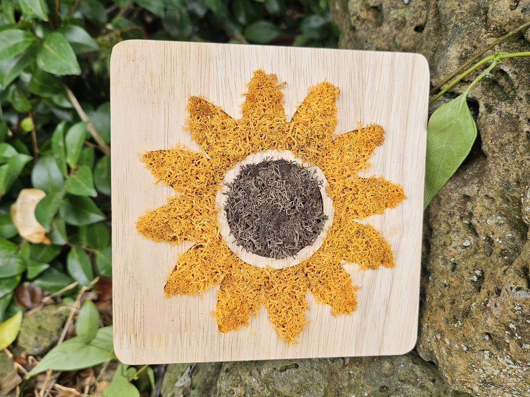
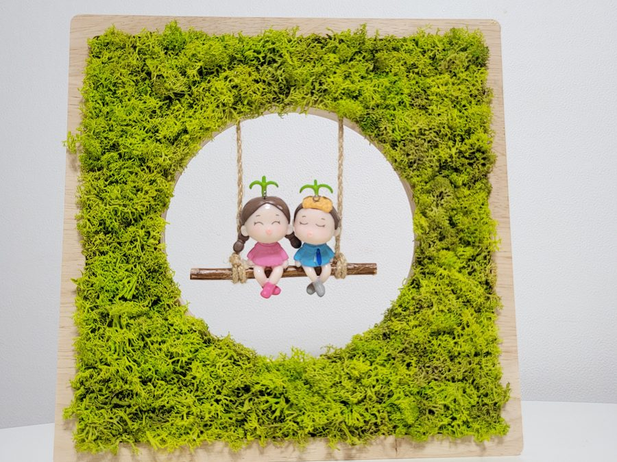
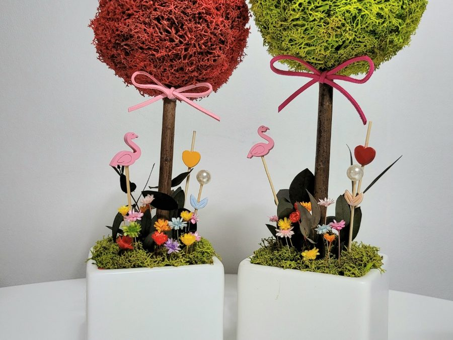
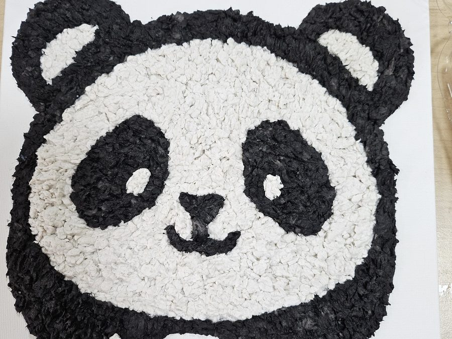
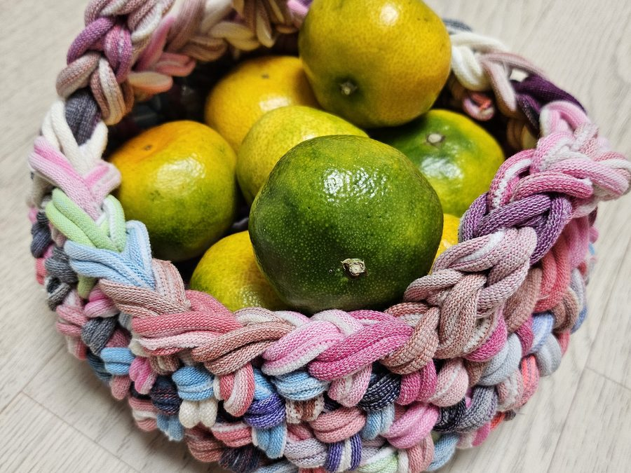
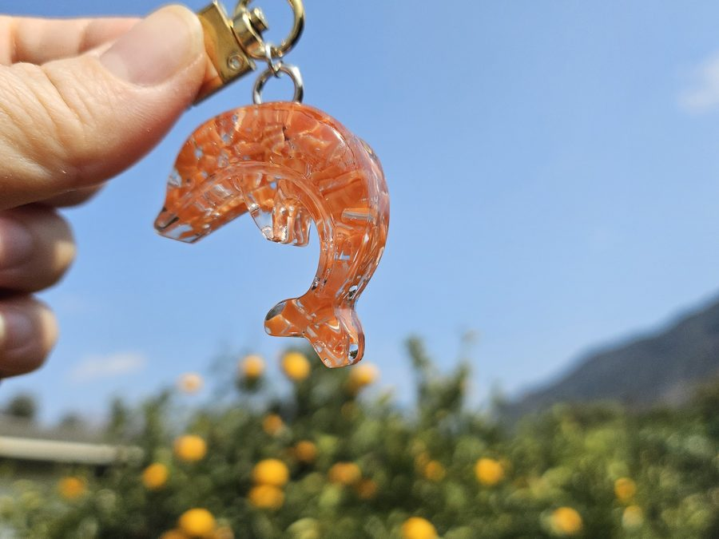
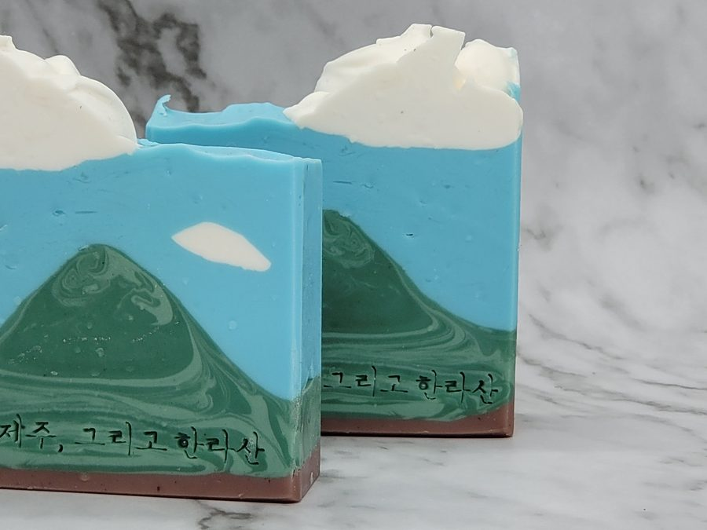
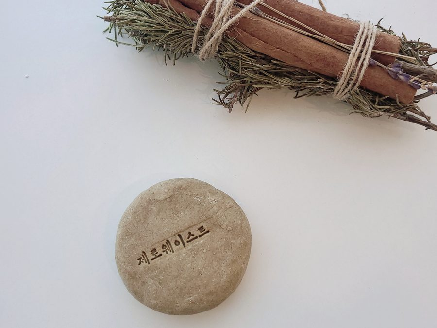
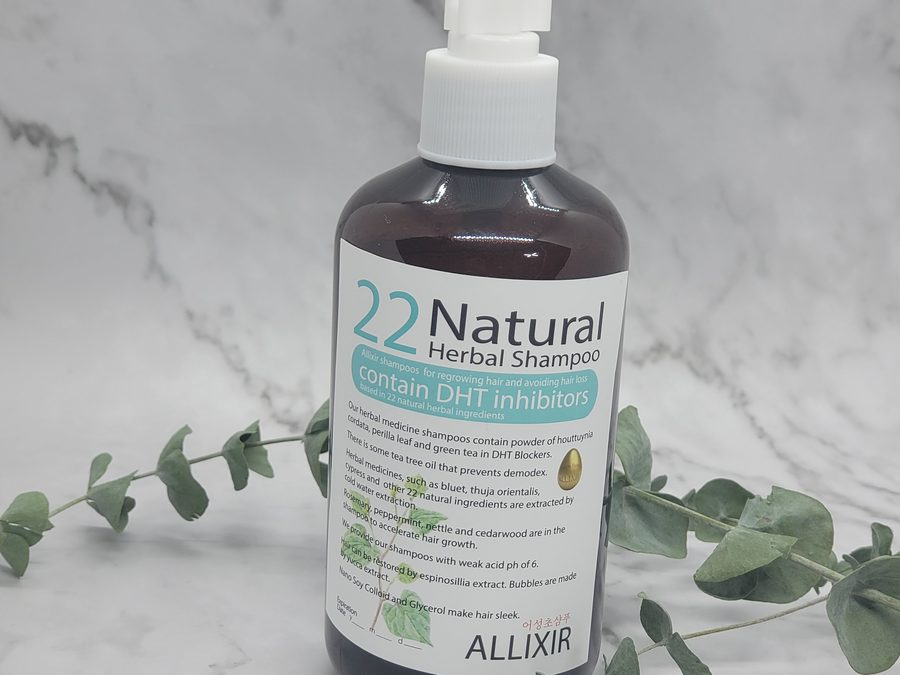
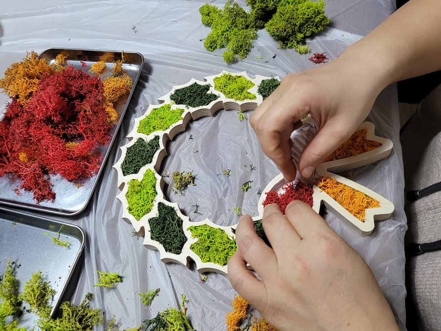
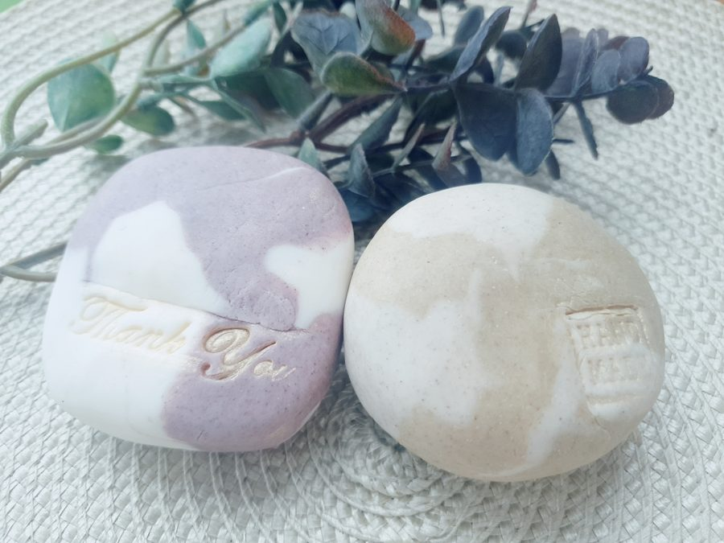
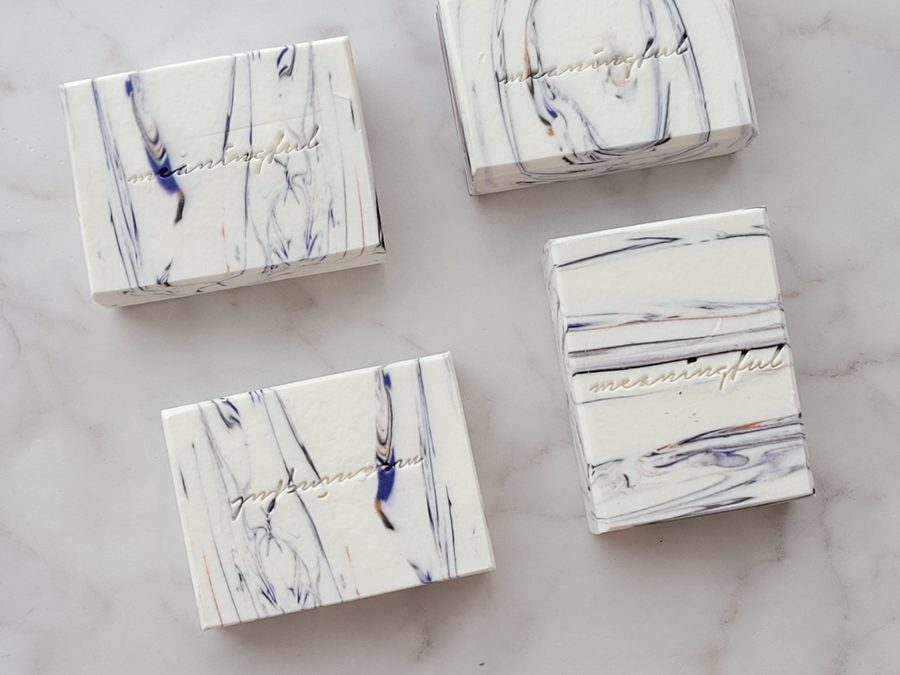
한 번으로 끝나지 않는 수업도 합니다.
초등학교 돌봄교실에서 40주를 이어 진행한 연간 커리큘럼이 이미 짜여 있습니다. 기관 사정에 맞춰 10회 · 20회 · 40회로 조정해 드립니다. 연간 정기 출강 보기 →
초등학교 돌봄교실에서 40주를 이어 진행한 연간 커리큘럼이 이미 짜여 있습니다. 기관 사정에 맞춰 10회 · 20회 · 40회로 조정해 드립니다. 연간 정기 출강 보기 →